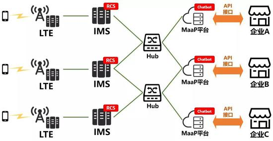
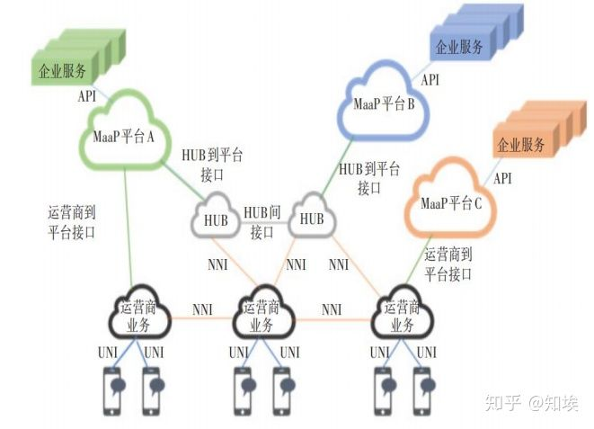

MaaP
- MaaP
MaaP=Messaging as a Platform=消息即平台- 架构
- 
- 
- 关键特性
- 各环节
- 概述
- 具体组成
- 运营商服务
- 提供基础RCS消息业务， 广泛涉及运营商所能提供的基础服务， 包括相关的安全控制、账单和结算功能等
- 终端用户
- 使用A2P RCS业务的用户， 同时也是接受企业通过RCS维系其业务的客户。终端业务可以由运营商、终端系统开发者(谷歌、苹果) 、RCS软件应用开发者提供
- HUB(集中—输出系统)
- 主要功能是将不同运营商提供的业务统一向上聚合到MaaP平台， 同时连接不同的MaaP平台， 统一不同的协议。国内厂商主要包括中兴通讯等
- MaaP平台
- 连接企业服务和运营商RCS业务的能力增强开放平台， 主要包括聊天机器人、插件和增强的A2P RCS业务
- MaaP平台可以由运营商提供， 也可以由专门的平台开发者提供
- 国内主要第三方平台开发商
- 菊风
- 小源
- 原有智能短信厂商梦网科技
- 创世漫道(中嘉博创)
- 等
- 国内主要第三方平台开发商
- 企业(品牌) 服务
- 企业通过A2P RCS为其客户提供的所有业务和服务
- 运营商服务
- 概述